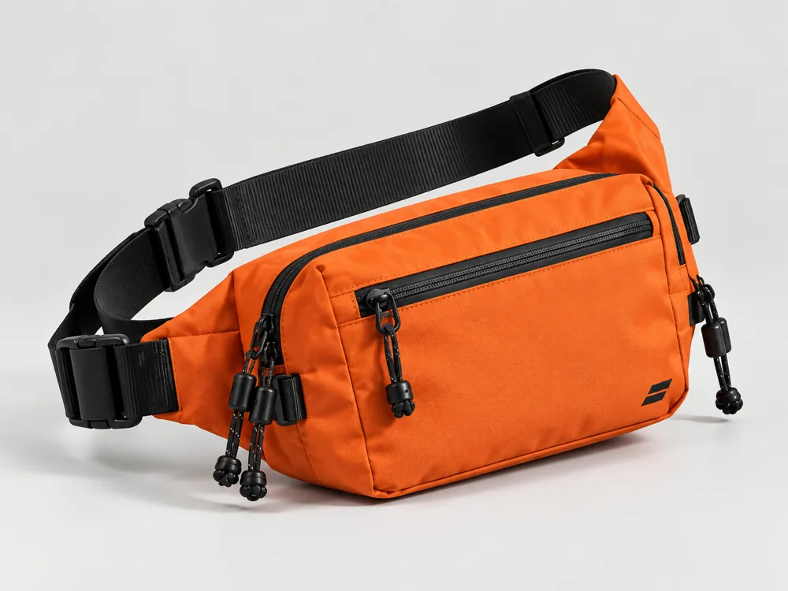
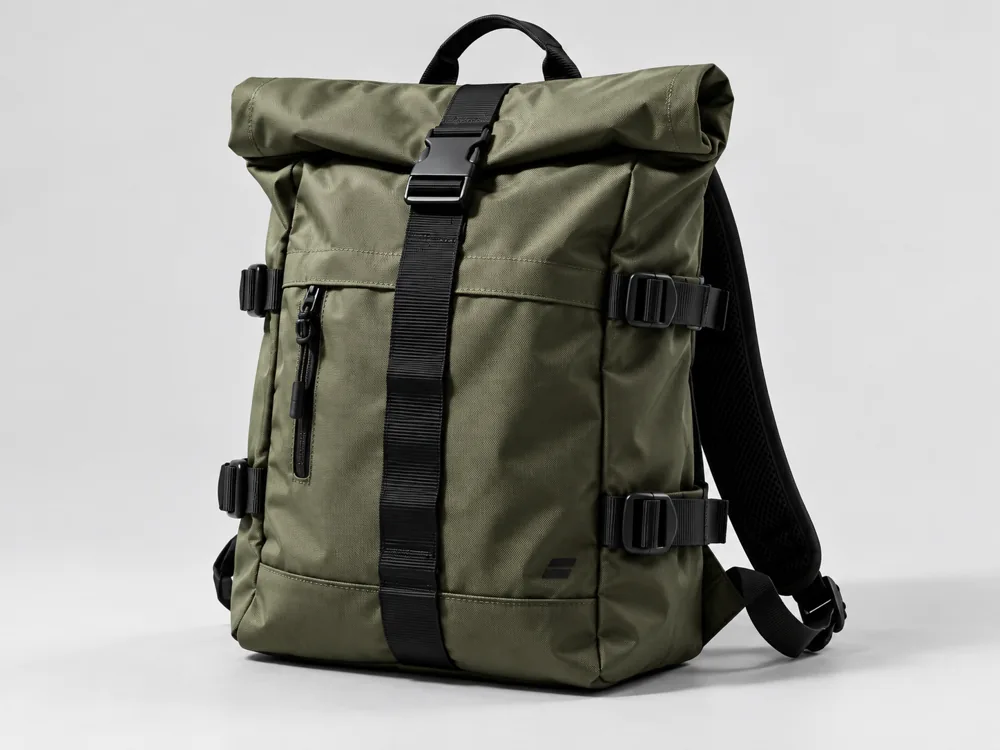
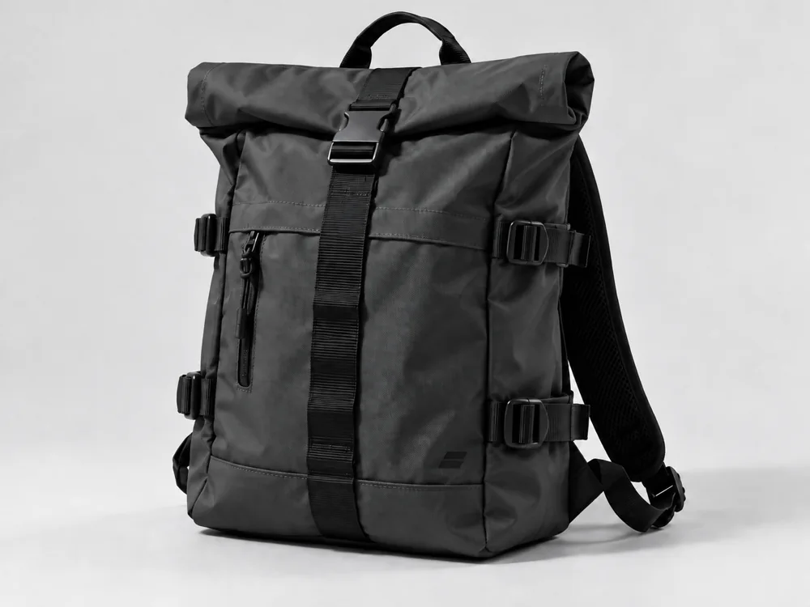
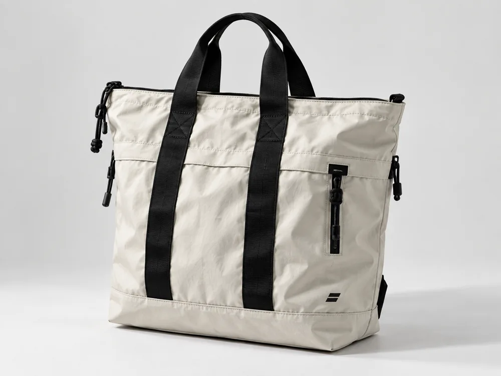

Петля 04
3,900 ₽4 л · Самое нужное — рядом и под рукой.


Рюкзак для города и коротких поездок. Плотный нейлон, верх со скруткой и регулируемые стропы. Внутренний карман помогает отделить ноутбук от остальных вещей.
8,900 ₽ демо-цена
Здесь показаны оба цвета одной модели без отдельных дублирующих страниц. Покупка доступна только как локальный демонстрационный сценарий.

4 л · Самое нужное — рядом и под рукой.

16 л · Шопер для планов, которые меняются на ходу.